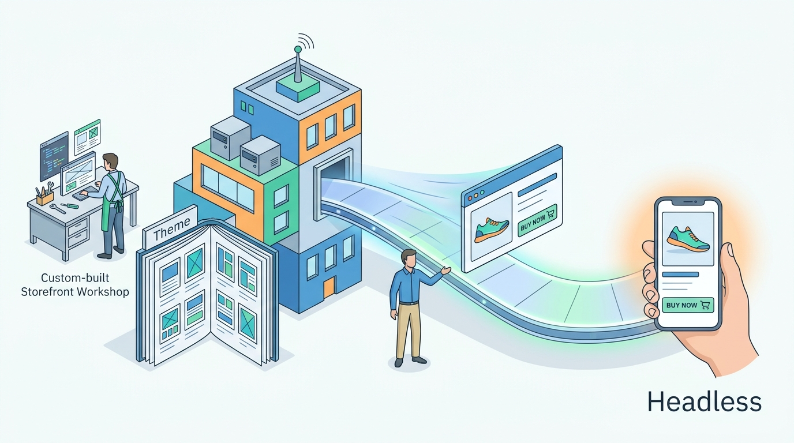

Part VII — PLATFORM: How Commerce Platforms Are Built
Delivering the Storefront: Themes, Headless, Rendering and Performance
AI-assisted: researched and written with Claude Code, images generated with the Gemini API. How this works

Part VII — PLATFORM: How Commerce Platforms Are Built
AI-assisted: researched and written with Claude Code, images generated with the Gemini API. How this works
